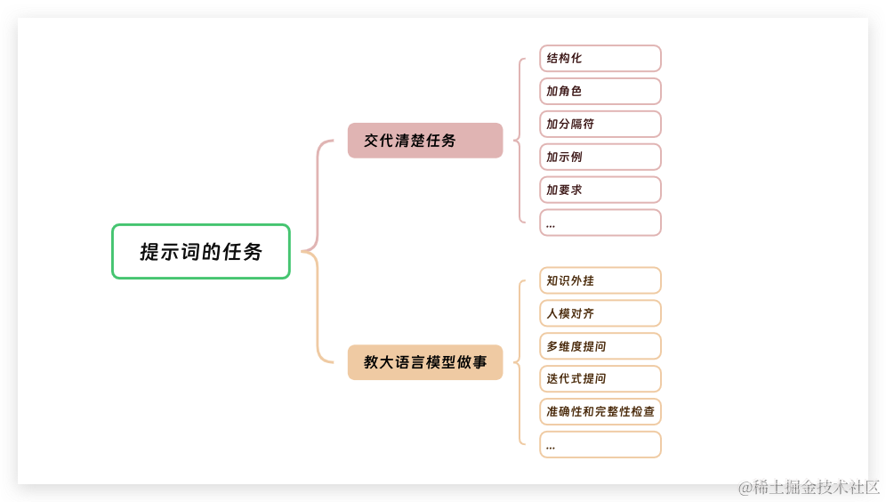
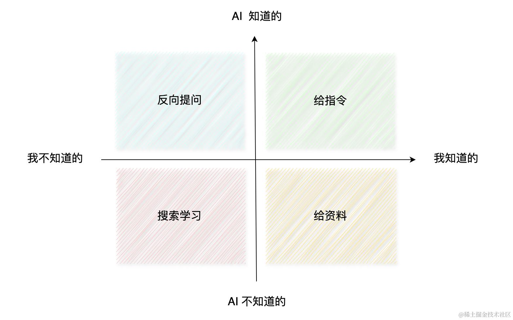

一、引言
在前面的章节中，我们学习了编写提示词所需的基础知识，奠定了坚实的学习基础；探讨了提示词的战略思想，帮助我们从宏观上理解优秀提示词的特征；掌握了评价提示词好坏的方法；并学会了通过任务拆解应对复杂任务。
在战术章节中，我们将重点介绍各种常见的、能够有效提升提示词效果的战术技巧。
二、战术技巧重要性
战略是关于目标和方向的宏观计划，而战术则是实现战略的具体步骤和行动计划。提示词的战术技巧，是指编写高质量提示词的具体经验，是提示词战略思想的具体实现。
在编写提示词时，许多人常常会遇到各种问题，如：
-
尽管详细说明了要求，但模型输出与预期存在差异。
-
模型缺乏业务知识，导致输出结果不准确。
-
模型是黑盒的，不清楚其输出逻辑，总是感到不放心。
-
希望借助模型深入学习某个知识点，但不知道如何提问。
通过学习后续章节中的战术技巧，我们将能够清晰地理解这些问题的根源，并找到根本性的解决方法。
三、提示词战术技巧
在当前阶段，提示词肩负着两个核心任务：一是清晰地交代任务，二是指导大语言模型完成任务。提示词的战术技巧主要围绕这两点展开。

提示词的战术技巧种类繁多，其中如结构化、添加角色、使用分隔符、提供示例、明确要求等，主要是为了更好地向大语言模型传达任务信息；而知识外挂、人模对齐、多维度提问、迭代式提问、正确性和完整性检查等，则是为了更有效地指导大语言模型完成任务。在后续章节中，这些技巧将会得到详细讲解。

总体而言，针对我们与模型都已掌握的知识，可以直接通过提示词向模型下达指令执行任务；对于我们掌握而模型尚未知晓的内容，可以向模型提供相关资料，让其基于资料回答问题。对于我们不清楚但 AI 已知的知识，可以通过反向提问的方式从模型中学习。至于我们和 AI 都不掌握的领域，则可以依靠传统的搜索方法进行探索。四、实战平台
大家可以通过编写提示词，直接与国内外的大语言模型进行对话。国外常见的大模型平台有： ChatGPT 、Claude、Gemini 等；国内常见的大模型平台有：通义千问、Kimi、文心一言、混元大模型、智谱清言、讯飞星火 等。
此外，大家还可以利用智能体平台，将提示词配置成智能体，更便捷地进行互动。国外的智能体平台： Coze 、 Poe 、Dify 等；国内常见的智能体平台： 扣子 、文心智能体平台 等。
五、总结
本节介绍了提示词战术技巧的重要性，列举了常见的战术技巧，并提供了国内外常见的大语言模型平台和智能体平台。
在接下来的技巧篇中，我们将重点介绍一些关键的战术技巧。需要注意的是，无论技巧如何变化，都必须遵循提示词的战略思想。在实际应用中，不要过于依赖单一的技巧，而应在战略思想的指导下，根据实际情况灵活运用各种战术技巧，以实现最佳效果。
你最喜欢的大语言模型是哪一个？为什么？你是否创建过智能体？如果有，欢迎在评论区分享你的经验和有趣的智能体案例。
COMMUNITY NOTES
读者评论
这篇文章暂时没有读者留言。